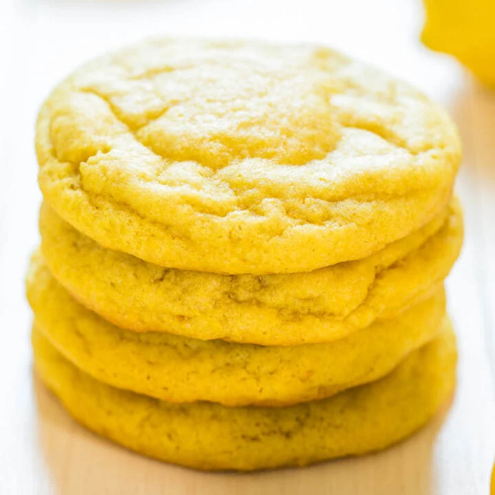

Lemon cookies

These cookies are going to be the talk of the party!
This recipe is an easy recipe to follow, keep reading to learn how to make
this amazing cookies using real lemons!
Here are all the ingredients you need:
- 200 gr room-temperature unstaled butter.
- 200 gr white sugar.
- 400 gr all-purpose flour.
- 1 lemon.
- 1/2 tea spoon of baking powder.
Lets make it together! follow the steps!
- Mix all the dry ingredients together.
- Grate the lemon's superfical skin, add it to the mix.
- Squeeze the juice out of the lemon, add to the mix.
- Add the butter.
- Knead the dough until homogeneous.
- Let it rest in the fridge for about 1hs.
- Prepare an oven tray, butter it up or cover it with baking paper.
- Pre-heat the oven at medium tempeture (160c).
- Take spoonfulls of dough, shape them as a disk.
- Roll one side on white sugar and put them in the tray.
- Bake for 20 mn.
- Let them cool and enjoy!
Get back